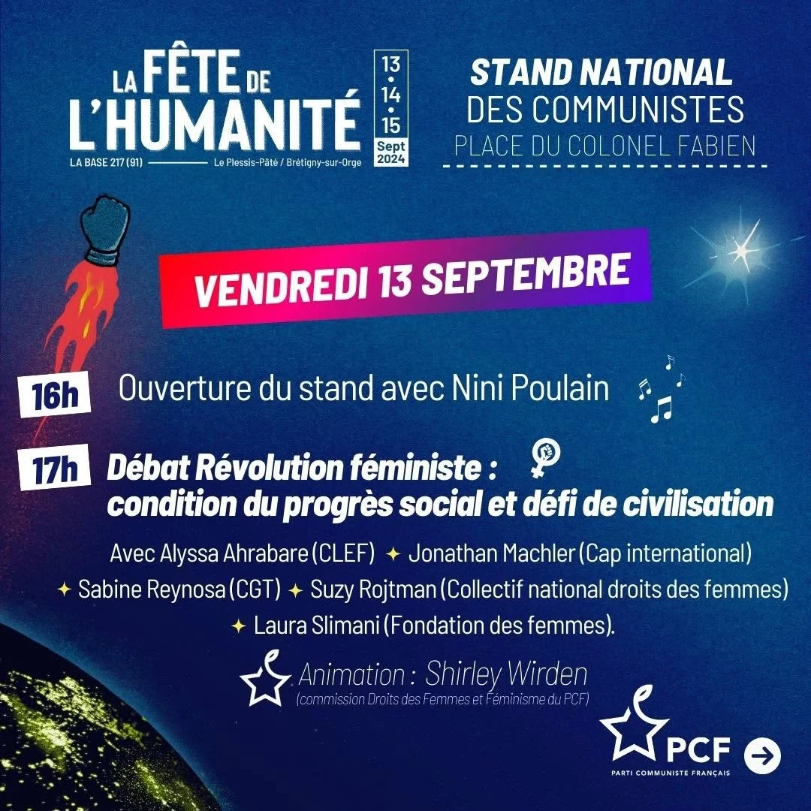
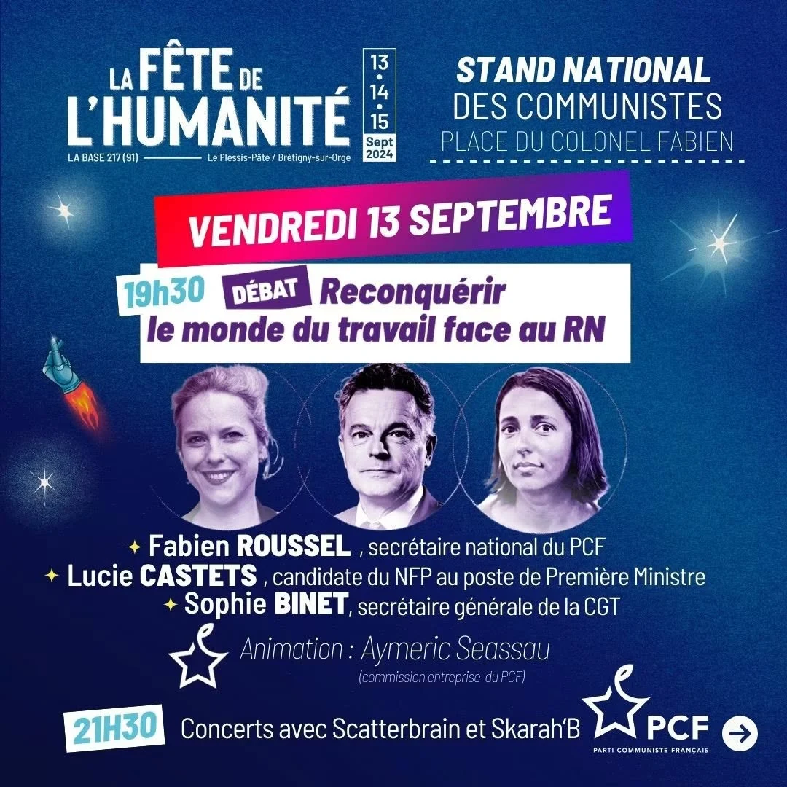
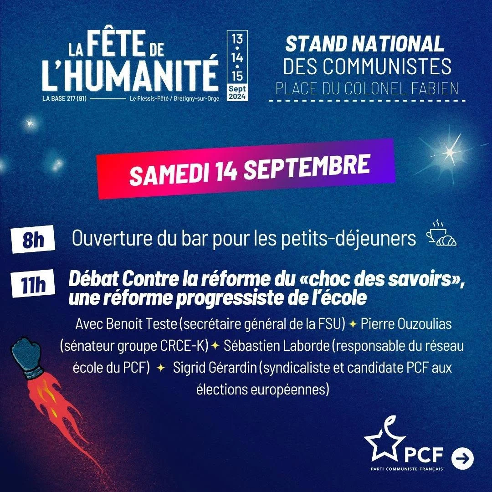
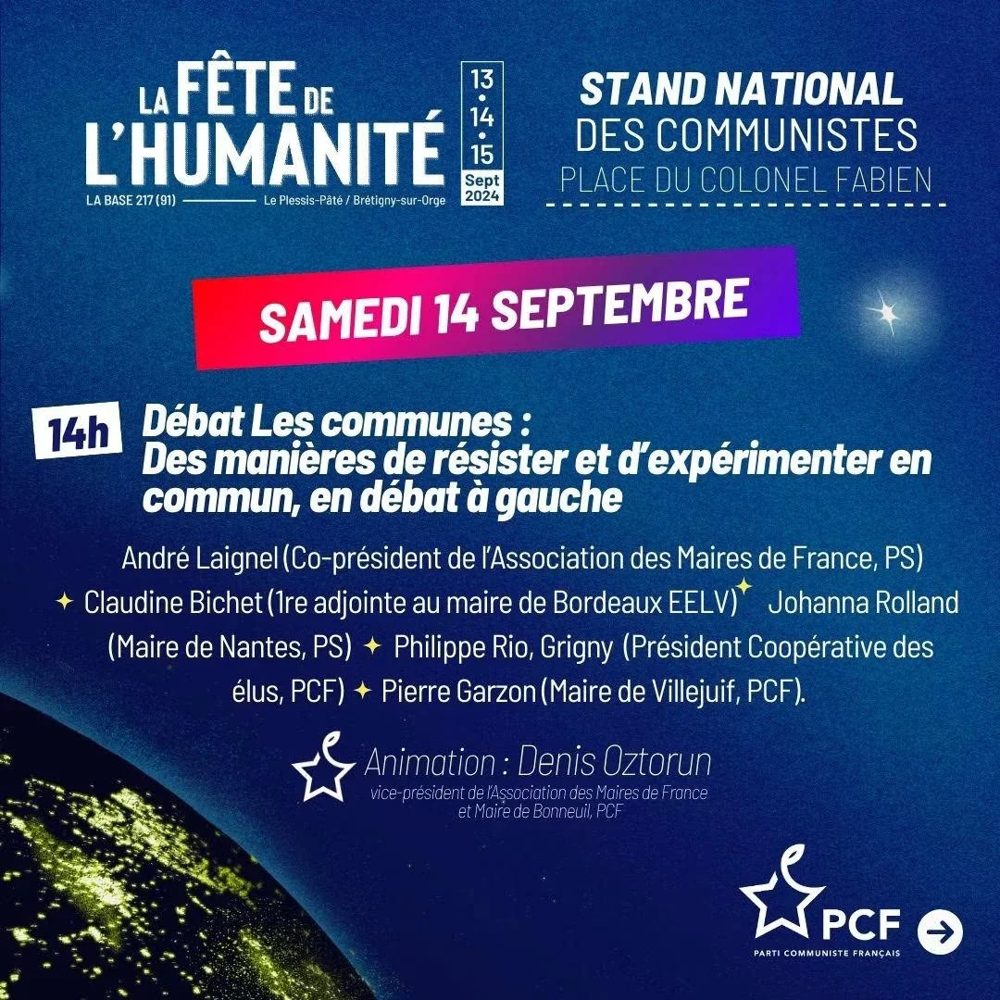

Publication relayée par le PCF 79
Cinq débats annoncés au stand du PCF à la Fête de l’Humanité
Date de mise à jour indiquée par Facebook · 9 septembre 2024
Texte de la publication · PCF national
A vos agendas !
Les 5 grands débats du stand national des communistes à la Fête de l'Humanité




Sources
PCF national · publication relayée par le PCF 79 · bibliothèque Facebook · AR-0002-FB-01299
À lire aussi · Fête de L’Humanité. L’édition 2024 annoncée du 13 au 15 septembre